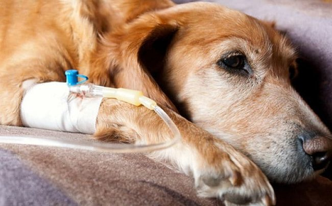
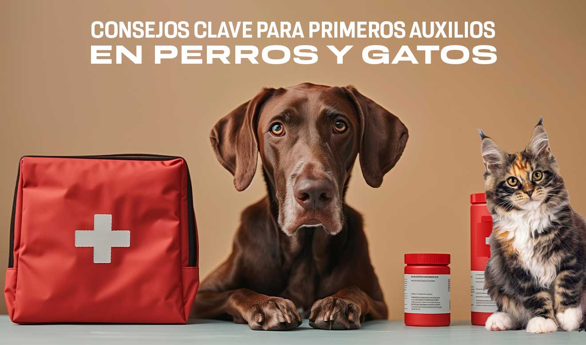
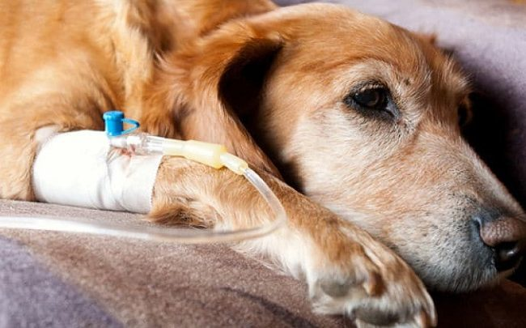
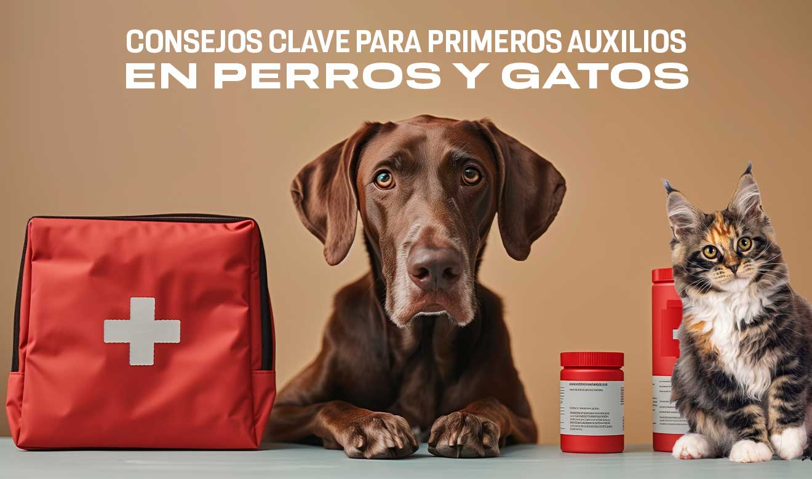

Bienvenid@s al ricon de los adorables
Conoce como ayudarlos conllevando a una mejor calidad de vida
¡juntos podemos cambiar vidas!
cada dia hay mas animales en la calle sin recibir atencion medica,sin hogar y amor
tu ayuda puede marcar la diferencia
 


